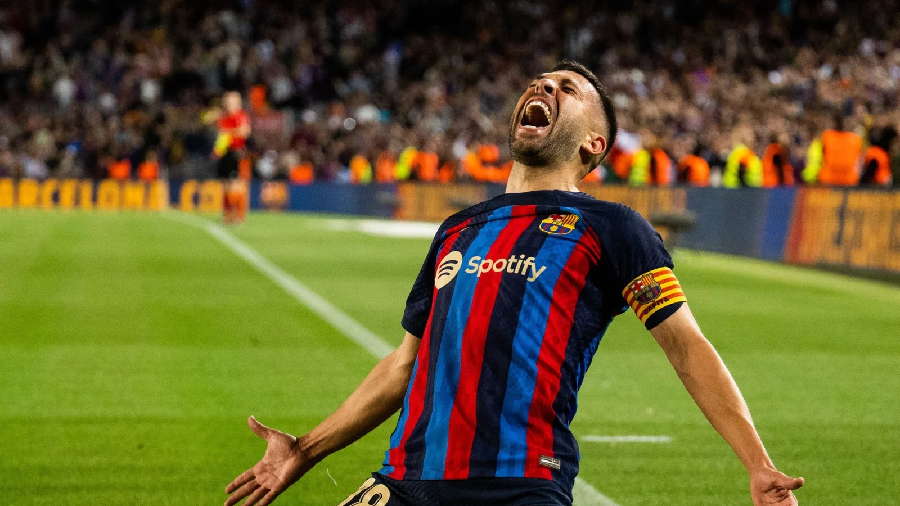
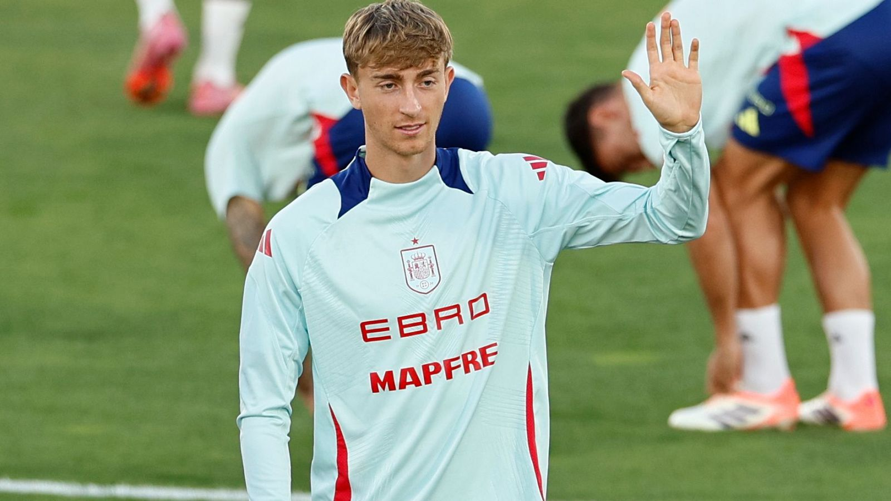
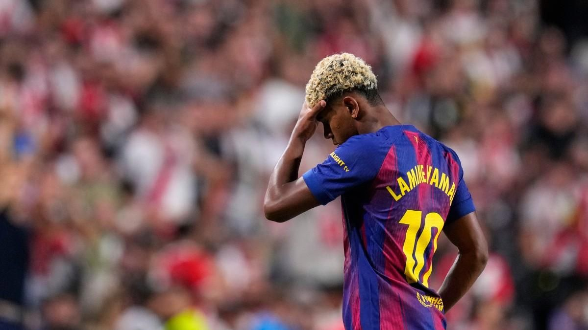

Esports
Última Hora, Jordi ALba anuncia la seva retirada!

Jordi Alba es despedeix del Futbol, després de la seva exitosa carrera, acaba aqui.
A la cantera va començar al Barça B, Cornellà i Valencia B.
El seu debut professional va ser amb el València CF al 2009.
Passat això, va estar 11 temporadas al Barça; 6 Ligas, 5 Copas del Rey, 1 Champions League, 1 Mundial de Clubes, 1 eurocopa amb Espanya. 2012-2023.
Actualment jugava al Inter Miami, juntament amb Messi i Busquets, qui també ha anunciat el seu retir a finals d'any. 2023-2025
Huijsen abandona la concentració de la selecció española i entra Laporte!

El central del Real Madrid va arribar amb síntomes de fatiga muscular i se li ha detectat una lesió muscular.
Aymeric Laporte, central del Athletic Cluc de Bilbao, torna a la selecció casi 1 any després de la seva última convocatoria.
Lamine Yamal recau a les molesties del Pubis i estará 2-3 semanes fora.

Lamine Yamal després del partit de champions amb el PSG, ha tornat a sentir molesties al Pubis, aixo el deixa fora del paró de seleccions amb Espanya, i és baixa amb el partit del Sevilla.
El futbolista del Elche CF, Rafa Mir, processat per presumpta agressió sexual "amb violència"
La titular de la plaça número 8 del Jutjat d'Instrucció de Llíria (València) ha processat els futbolistes Rafa Mir i Pablo Jara per dos delictes d'agressió sexual, en el primer cas amb accés carnal i ocupació de violència.